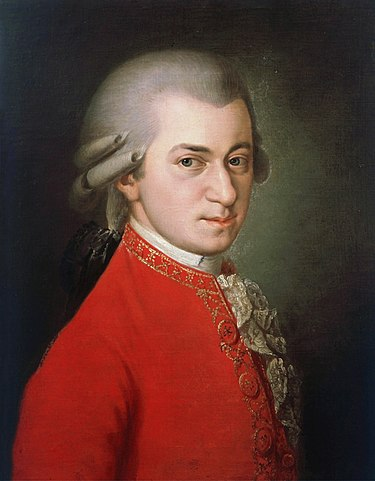

1756년 1월 27일 찰츠부르크에서 태어난 천재적인 오스트리아의 작곡가 모차르트(1756년 1월 27일~1791년 12월 5일)를 소개한다.

1970년대 초상화
생애
모차르트는 1756년 1월 27일 찰츠부르크에서 태어나서 궁정 음악가였던 아버지에게 피아노와 바이올린을 배웠고, 다섯 살 때 아예 작곡을 하기 시작했으며, 1764년에서 1765년 사이에 바흐로부터 처음으로 교황곡을 작곡하는 법을 배웠는데 이것이 모차르트가 수많은 교황곡을 남기는 계기가 되었다. 모차르트는 빈에서 1784년에 14세인 베토벤을 만나 베토벤을 교육시키는데 전념하기도 했다.
죽음
모차르트는 1791년 12월 5일 오전 0시 55분 경에 갑자기 병으로 죽었으며 모차르트가 완성하지 못한 작품 레퀴엠은 프란츠 사버 쥐스마이어(Franz Xaver Sussmayr)가 완성시켰다.
음악
오페라, 교황곡, 행진곡, 관현악충 음악, 피아노 변주곡, 바이올린 협주곡, 교회용 성가곡, 칸타타 미사곡 등 다양한 장르를 아우르며 600 여곡을 작곡하여 후대에 남겼다.